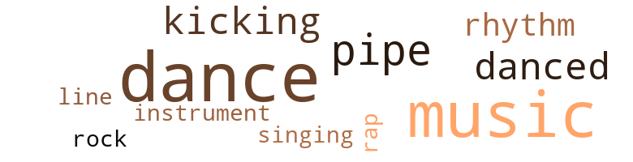
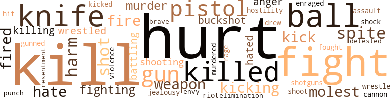

Lover With the Killer's Instinct (The), by Hart, Marcus A. (1975)
43 music-related terms matched in this text.
Most frequent terms in this topic: dance (14); music (12); pipe (4); danced (3); kicking (2)
dance.n.01
Definition: an artistic form of nonverbal communication
| word | sentence |
|---|---|
| dance | He just told her , ' let 's go dance , baby . ' " |
| dance | " Well , uh , can I have dis dance ? " |
| dance | " Aw come on , chick , I jest hafter dance witch a one more time . |
| dance | J observed that Tina was quite reserved , not talking much , sticking close to the Ketchums , and refusing to accept invitations for a dance . |
dance.v.03
Definition: skip, leap, or move up and down or sideways
| word | sentence |
|---|---|
| dance | I gently grasped her shoulders and pulled her close to me , and we began to dance lightly . |
| dance | " Rick , please , I do n't like to dance too closely , and as a rule , I do n't do it . " |
| dance | I lifted her up slightly , then began to dance with her to Jackie Wilson 's " Let 's Work Out . " |
| dance | One of the guys smacked my girl when she refused to dance with him . " |
| dance | " Did the bastard want to dance outside ? " |
| dance | I do n't care to dance right now . |
| dance | You dance good . " |
| dance | " Well , Roy , you dumb-ass , the lady said she did n't care to dance right now . |
| dance | After our first drink , I asked Marie to dance . |
| dance | " Listen , Rick , I do n't appreciate your asking Marie to dance in front of me . |
| danced | We had talked and danced once , or maybe twice , and had a couple of drinks . |
| danced | I am going to try hard not to tear my ass tonight ; I must watch my shit , I thought , as we danced lightly , smoothly . |
| danced | We danced to the soft music and sipped on a few drinks between numbers . |
kick.v.04
Definition: kick a leg up
| word | sentence |
|---|---|
| kicking | And you 're not kicking anybody 's ass , except , perhaps , mine . |
| kicking | I do n't want any scars on my damn face , I thought , dropping to floor and kicking the bastard under the chin . |
| Kicking | Kicking the bastard loose from my arm with all the strength I could muster , I struggled to my feet . |
music.n.01
Definition: an artistic form of auditory communication incorporating instrumental or vocal tones in a structured and continuous manner
| word | sentence |
|---|---|
| music | The Brown Bomber Club was featuring live music that night . |
| music | Let 's enjoy the music , and , of course , each other . |
| music | Then I began to exercise my throat , as she put some albums on the console - a combination of jazz , rock and roll , and just plain music . |
| music | But the sweet sound of the music and my state of mind dictated that I should move , decisively , for my kind of action . |
| music | " You know , Donna , I came here tonight to be alone , to have a few drinks and listen to some music . |
| music | Now that I 've had my few drinks and listened to some music , I suppose that I am ready to exit this place . |
| music | The music was continuing , as we sat motionless , wordlessly . |
| music | The music was great at the Indigo Club . |
| music | I did n't know if I should park , get out , and run like hell , or play it cool - go in there with my chin up and face the music . |
| music | The music was great . |
| music | We danced to the soft music and sipped on a few drinks between numbers . |
| music | " Now , then , young lady , let 's play some music . " |
musical_instrument.n.01
Definition: any of various devices or contrivances that can be used to produce musical tones or sounds
| word | sentence |
|---|---|
| instrument | My instrument was stiff and jumping for joy , and soon her legs were moving up and down . |
pipe.n.04
Definition: a tubular wind instrument
| word | sentence |
|---|---|
| pipe | I quickly got my ass out of the car , taking a pipe from under the seat . |
| pipe | So lunging forward , with a quick flip of the pipe , I struck him above the left eye , hard . |
| pipe | Then I began to wield the pipe like a madman . |
| pipe | I did n't know who I was striking where , but I knew that I was making contact , until suddenly , I dropped the damn pipe . |
rap.n.05
Definition: genre of African-American music of the 1980s and 1990s in which rhyming lyrics are chanted to a musical accompaniment; several forms of rap have emerged
| word | sentence |
|---|---|
| rap | But you must remember that I did n't rap on her , man . |
rhythm.n.04
Definition: the arrangement of spoken words alternating stressed and unstressed elements
| word | sentence |
|---|---|
| rhythm | I could sense when the rhythm of her breathing changed , becoming harder and more rapid . |
| rhythm | She followed the rhythm of my strokes as if she had invented them . |
rock_'n'_roll.n.01
Definition: a genre of popular music originating in the 1950s; a blend of black rhythm-and-blues with white country-and-western
| word | sentence |
|---|---|
| rock | Then I began to exercise my throat , as she put some albums on the console - a combination of jazz , rock and roll , and just plain music . |
sing.v.02
Definition: produce tones with the voice
| word | sentence |
|---|---|
| singing | And then suddenly the crowd came out and began singing " Happy Birthday To You . " |
tune.n.01
Definition: a succession of notes forming a distinctive sequence
| word | sentence |
|---|---|
| line | " Well , I think I follow your line , and I 'm going to accept that as a compliment . " |
161 violence-related terms matched in this text.
Most frequent terms in this topic: hurt (21); kill (19); fight (13); knife (7); balls (6)
anger.n.01
Definition: a strong emotion; a feeling that is oriented toward some real or supposed grievance
| word | sentence |
|---|---|
| anger | I moved swiftly toward her , my anger rising , as she moved backward , astonished and afraid . |
| anger | The tone of her voice was soft , with no sign of anger . |
battle.v.01
Definition: battle or contend against in or as if in a battle
| word | sentence |
|---|---|
| battling | When we got outside it turned out to be six dudes battling - five against one . |
| battling | Still , I could n't afford to quit , so I kept on battling . |
bird_shot.n.01
Definition: small lead shot for shotgun shells
| word | sentence |
|---|---|
| buckshot | I rolled , humped , and twisted - I mean , you know , like twisting the night away , until finally I unloaded one barrel - not with buckshot but with pure love juice . |
| buckshot | At this juncture I was close , and before I could say buckshot , I came , and slowly ground to a halt . |
cannon.n.04
Definition: heavy automatic gun fired from an airplane
| word | sentence |
|---|---|
| cannon | It looked like a cannon for the moment . |
draw.v.23
Definition: pull (a person) apart with four horses tied to his extremities, so as to execute him
| word | sentence |
|---|---|
| drew | Then suddenly the car pulled out and drew up beside me . |
elimination.n.05
Definition: the murder of a competitor
| word | sentence |
|---|---|
| elimination | How did I get put on the elimination list by my so-called friends ? |
enrage.v.01
Definition: put into a rage; make violently angry
| word | sentence |
|---|---|
| enraged | Some of the people began yelling at Kathy , who was now enraged . |
envy.n.01
Definition: a feeling of grudging admiration and desire to have something that is possessed by another
| word | sentence |
|---|---|
| envy | The look she gave me as we moved past her seemed to indicate a bit of envy , amazement , and perhaps a touch of mixed happiness . |
fight.n.05
Definition: a boxing or wrestling match
| word | sentence |
|---|---|
| fight | By now they had suddenly realized that someone else was in this damn fight . |
| fight | " Listen , young man , I talked to my sister out in the country last night , and she told me all about the big fight you were involved in out there . |
| fight | " Well , Rick , I heard about your fight out in the country . |
| fight | A fight had erupted . |
| fight | This is my damn fight . |
| fight | And when these bastards get back home , everybody will know that they were in a fight . |
| fight | On my way back to pick up the car , I wondered who that fourth bastard was , because he did n't seem to be too concerned about the fight . |
| fight | A helluva gun fight ensued that should have been filmed and sent to Hollywood . |
| fight | You is the same boy dat were in a fight witd deese boys , ai n't - cha ? " |
| fight | " Well , I was able to get in the house , but no sooner than I did I got into another fight with him . |
fight.v.02
Definition: fight against or resist strongly
| word | sentence |
|---|---|
| fight | I 'll fight you , if that 's what you really want . |
| fighting | You are robbing me of the pleasure of fighting my own damn fight , and I do n't like that . |
| fight | I do n't want to fight you . " |
| fighting | I was moving , ducking , falling , struggling , and fighting like hell . |
| fought | " Well , let 's see , is that - " " Yeah , yeah , that 's the young fellow who fought with those boys . " |
| fighting | She told me all about the private eye and how she was fighting to keep you alive . |
| fight | I really had to fight to keep my cool . |
fury.n.01
Definition: a feeling of intense anger
| word | sentence |
|---|---|
| rage | And now , in a sudden rage , she threw the weapon to the floor . |
gun.n.01
Definition: a weapon that discharges a missile at high velocity (especially from a metal tube or barrel)
| word | sentence |
|---|---|
| gun | She probably does n't have a gun . |
| gun | I love you , Rick , and before I let you keep cheating on me the way you have , I 'll kill you ! " she said , waving the gun at me . |
| gun | A helluva gun fight ensued that should have been filmed and sent to Hollywood . |
| gun | Had it been me with the gun , she would most definitely have been pushing up daisies by now . |
| gun | Finally the cop raised the gun , and I struck his shoulder with a 357 slug , sending him to the floor . |
gun.v.01
Definition: shoot with a gun
| word | sentence |
|---|---|
| gunned | Then I stood there wordlessly , remembering how the " bookie man " had been gunned down in front of my eyes by a woman who claimed that he owed her five hundred dollars on a number she had hit in the morning " butter and eggs " market . |
harm.v.01
Definition: cause or do harm to
| word | sentence |
|---|---|
| harm | Someone close to you - a relative , maybe , or a good friend - is trying to harm you . |
| harm | And they are working to harm you , " she said , peering at my palm . |
hate.v.01
Definition: dislike intensely; feel antipathy or aversion towards
| word | sentence |
|---|---|
| hate | " Mister , I - er , I hate to ask you to , but if you do n't leave I 'm afraid that my place is going to get torn up . |
| hated | I hated like hell to turn over , but it had to happen . |
| hate | " I hate to see the boys go this way , but they asked for it . |
| hate | I am really going to hate to leave all this , even more than I did before , I thought . |
| detested | He would often ask me to drive Mrs. Ketchum downtown to shop - a chore I detested sharply , though I would always muster the courage to take her . |
| hated | She insisted on my going into the stores with her , which I hated . |
hostility.n.01
Definition: a hostile (very unfriendly) disposition
| word | sentence |
|---|---|
| hostility | They did n't bother me , but it seems that I developed a feeling of hostility toward them at this point , because I did n't consider myself a criminal . |
hurt.v.04
Definition: cause damage or affect negatively
| word | sentence |
|---|---|
| hurt | If Irene finds out what we 've done , she will be hurt , and we both will have lost our friendship , or maybe more . |
| hurt | I do n't want to become trigger-happy and perhaps hurt innocent people , I want to be sure . |
| hurt | I know what it 's like to be hurt . |
injury.n.01
Definition: any physical damage to the body caused by violence or accident or fracture etc.
| word | sentence |
|---|---|
| harm | This bastard not only had screwed up my thing , he was threatening me with bodily harm . |
| harm | I do n't mean any harm , Mister , but it 's true . |
| hurt | I know who you are , and I 'm telling you that I do n't ever want you to see my daughter again - I do n't want her hurt . |
| hurt | You 've already broken her heart and I do n't want her hurt any more , especially over a demon like you ! " |
| hurt | Irene does know about it , thanks to Mom , and she 's a little hurt , perhaps more frightened than anything else . |
| hurt | " Look , man , get this damn woman back into your room or out of the damn building before she gets hurt , physically . |
jealousy.n.01
Definition: a feeling of jealous envy (especially of a rival)
| word | sentence |
|---|---|
| jealousy | " Do I note a wee bit of jealousy , my dear ? " she continued . |
kick.v.04
Definition: kick a leg up
| word | sentence |
|---|---|
| kicking | And you 're not kicking anybody 's ass , except , perhaps , mine . |
| kicking | I do n't want any scars on my damn face , I thought , dropping to floor and kicking the bastard under the chin . |
| Kicking | Kicking the bastard loose from my arm with all the strength I could muster , I struggled to my feet . |
kick_back.v.02
Definition: spring back, as from a forceful thrust
| word | sentence |
|---|---|
| kick | " You little bitch , I 'm going to kick your ass good . " |
| Kick | Kick my ass right now or get the hell out of here , and that 's the end of my transmission . " |
| kick | Then the desk clerk reported that the bastards had forced him to give them my room number and threatened to kick his ass if he called the police . |
| kicked | I managed to wrestle the pistol away from her and then kicked her ass good . |
kill.v.10
Definition: cause the death of, without intention
| word | sentence |
|---|---|
| kill | " Look , bitch , if you do n't get up , and I mean now , I 'll kill you where you lie , " he went on . |
| killed | Here I came down here just to think , and damn near got myself killed by a dumb mistake . |
| kill | I might kill myself . |
| Killing | Killing yourself is one thing , but doing it to me is something else . |
| kill | They will kill you . |
| kill | I 've had to kill a few people myself , and came damn close to getting killed a few times . |
| killed | I 've had to kill a few people myself , and came damn close to getting killed a few times . |
| kill | But if she questions it , then you should cut her ass a-loose , because a jealous person will kill on instinct . " |
| kill | I 'm gon na kill you , Rick . |
| kill | I love you , Rick , and before I let you keep cheating on me the way you have , I 'll kill you ! " she said , waving the gun at me . |
| kill | " Look , Irene , if you kill me , it will be on your conscience for the rest of your natural life . |
| kill | Do n't make me kill you , Rick , please . " |
| killed | If I have an accident I may get hurt , even killed on this damned street . |
| killed | And if I am going to get killed , I 'd rather get it trying to defend myself than die on the run . |
| kill | I 'm gon na kill you , Rick . |
| killed | Two of the Henderson brothers had been killed along with two of their cousins during the shoot-out . |
| killed | I heard that he 's the one who killed them , loo ! " |
| kill | " Oh , well - Rick , someone is gon na try and kill you , " she said finally . |
| kill | Instead I 'll drive by Uncle Jimmie 's house and kill a little time . |
| killing | That 's when I first thought seriously about killing you . |
| kill | I sort of wanted to kill all of them . |
| kill | I think I would kill myself , but not before I had a chance to kill you . |
| kill | I think I would kill myself , but not before I had a chance to kill you . |
| kill | Do you really mean that you would attempt to kill me ? |
| kill | " Even enough to kill me ? " |
| kill | well , even to kill me ! |
killing.n.02
Definition: the act of terminating a life
| word | sentence |
|---|---|
| kill | What I mean is that love will make a person kill . |
knife.n.02
Definition: a weapon with a handle and blade with a sharp point
| word | sentence |
|---|---|
| knife | And Big Jake , with knife in hand , was rushing toward me now . |
| knife | And then suddenly she swung at me with the knife . |
| knife | She cut at him with a knife . |
| knife | I did n't trust her with that damn knife . |
| knife | And Kathy was standing against the wall , still holding the knife . |
| knife | But then suddenly , Bob Henderson made a dash for me , armed with a long switchblade knife . |
| knife | One grasped my arm while the other slashed me across my arm and chest , causing me to fall as I struggled to stay out of reach of the knife . |
malice.n.01
Definition: feeling a need to see others suffer
| word | sentence |
|---|---|
| spite | You see , you have made love to me , and in spite of my not wanting to get involved , I may , in my weakest moments , yield to your desires without due consideration ; because I simply can not deny the fact that I do have a certain feeling for you . |
| spite | I wanted this chick in spite of the incident . |
| spite | I decided to stay there , in spite of the wetness , and I continued to stroke harder and faster . |
| spite | His sons must have been good boys , in spite of what some people may have thought of them . |
molest.v.01
Definition: harass or assault sexually; make indecent advances to
| word | sentence |
|---|---|
| molest | " Rick , before we go , will you promise not to molest me ? " |
| Molest | " Molest you ? |
| molest | Look , if you think that I am going to molest you , perhaps you should just let me take you home . " |
murder.n.01
Definition: unlawful premeditated killing of a human being by a human being
| word | sentence |
|---|---|
| murder | You murder and make it look legal ; and not a damn thing is being done about it . |
| murder | The cops picked me up for murder . |
| Murder | Murder has been committed and is currently under investigation . |
murder.v.01
Definition: kill intentionally and with premeditation
| word | sentence |
|---|---|
| hit | But with a little patience , I hit the jackpot , bouncing like a yoyo . |
| murdered | " You are that bad nigger who 's murdered people and managed to make it look like self-defense . |
musket_ball.n.01
Definition: a solid projectile that is shot by a musket
| word | sentence |
|---|---|
| balls | My balls were crawling around like an undisciplined snake , ready to go . |
| balls | And then we got it on - kissing , pulling , scratching , rolling and bouncing like ping-pong balls . |
| ball | I was having a ball until someone called Irene to the telephone . |
| ball | During this period we had a ball . |
| balls | If he was , I saluted him for having such strong balls and good taste . |
| balls | I wish that I would 've had the balls to come sit down with you and talk about it , but I just could n't do it , Rick , I could n't , " he said candidly , I suppose . |
| balls | " I did n't hear you , " responded the burly D.I. " When I ask something - you will sound off loud and clear like you have a set of balls ; not like a pussy-cat . |
| balls | You do n't have the balls to make it . |
open_fire.v.01
Definition: start firing a weapon
| word | sentence |
|---|---|
| fired | Hastily , I retrieved my equalizer , a .38-caliber Smith and Wesson , and fired point blank into his belly as he reached for me . |
| fire | As I turned to fire at him he was already headed for the exit . |
| fire | I explained to her briefly what had taken place , and before she could fire any more questions at me I went quietly to my room for a few moments of meditation and rest , leaving her sitting there apparently frightened . |
| fired | For a moment I wondered if holding the muzzle of a 155 mm howitzer after it had been fired would be any warmer . |
| fire | I did n't call you in here to fire you . |
| fired | The man fired at me twice as I scrambled further around the parked car . |
pain.v.02
Definition: cause emotional anguish or make miserable
| word | sentence |
|---|---|
| hurt | " Have I hurt you , Kathy ? " |
| hurt | Please , please Rick , do n't hurt me anymore . " |
| hurt | I did go to a drive-in theater with him once because he threatened to hurt me if I did n't . |
| hurt | And for them not to come back would hurt their pride , their image of being bad . " |
| hurt | Ted is a good man and I do n't want to hurt him , but he just does n't do anything for me sexually . |
| hurt | Kathy had told me that we should quit seeing each other because she knew I was tight with Irene and she did n't want to get hurt , or hurt Irene . |
| hurt | " Well , I 've been confused for the past week , so a bit more confusion wo n't hurt . |
| hurt | Then we decided that you had hurt each of us , and we agreed to try and get rid of you ; or at least get you out of town . |
| hurt | " Come on , I wo n't hurt you ; I promise to be a perfect gentleman . " |
| hurt | I wo n't hurt you ! " |
| hurt | And you do n't have to worry - I promise not to hurt him . |
| hurt | The weekend had been a fast one for me , and I knew that plenty of rest now would n't hurt me , but it would n't help my busy schedule either . |
| hurt | Maybe it wo n't hurt so badly . |
| hurt | Please , Rick , tell me that you 'll never leave me , that you wo n't hurt me ! " |
pistol.n.01
Definition: a firearm that is held and fired with one hand
| word | sentence |
|---|---|
| pistol | " OK , Mr. Lane , I want a full statement for my report , " the cop said , after taking my pistol . |
| pistol | I turned , pistol still in hand . |
| pistol | I managed to wrestle the pistol away from her and then kicked her ass good . |
| pistol | Then there was a sound that had to be the hammer of a pistol - click . |
| pistol | As I half-turned to roll off , slowly glancing up , I stared directly at the little pistol as it pointed straight at me . |
punch.n.01
Definition: (boxing) a blow with the fist
| word | sentence |
|---|---|
| punch | " OK , sugar punch . " |
rape.n.03
Definition: the crime of forcing a woman to submit to sexual intercourse against her will
| word | sentence |
|---|---|
| assault | I was released , while Bob Henderson was admitted to the hospital and his two brothers were locked up for aggravated assault . |
resentment.n.01
Definition: a feeling of deep and bitter anger and ill-will
| word | sentence |
|---|---|
| resentment | Then when I spoke with Kathy and she expressed her resentment toward you , we hired a man to get rid of you . |
riot.n.01
Definition: a public act of violence by an unruly mob
| word | sentence |
|---|---|
| riot | There might be a riot . |
shock.n.02
Definition: the violent interaction of individuals or groups entering into combat
| word | sentence |
|---|---|
| shock | I noticed Debbie looking at Ann and then at me , as if she had just undergone shock treatment ; but she remained silent . |
shoot.v.02
Definition: kill by firing a missile
| word | sentence |
|---|---|
| shot | She went limp , obviously having shot her load , too . |
| shot | Just remember that you could have shot the life outta me . |
| shoot | I wondered if she would have the nerve to shoot me . |
| shot | I could sense that even my main girl was more cautious in the manner in which she talked to me , especially since she had shot me that day . |
| shot | I believe that he would have shot me on the spot had there not been other officers in the area . |
shooting.n.02
Definition: killing someone by gunfire
| word | sentence |
|---|---|
| shooting | Why was that man shooting at you ? " |
| shooting | I was n't the only one standing out there when the shooting started , you know . " |
shotgun.n.01
Definition: firearm that is a double-barreled smoothbore shoulder weapon for firing shot at short ranges
| word | sentence |
|---|---|
| shotguns | " Oh yeah , they will bring their shotguns , along with the rest of the Henderson family , just to do one man in , eh Ted ? " |
violence.n.01
Definition: an act of aggression (as one against a person who resists)
| word | sentence |
|---|---|
| violence | And now I had to think : Why is it that every place I go lately I seem to get tangled up in some form of violence ? |
weapon.n.01
Definition: any instrument or instrumentality used in fighting or hunting
| word | sentence |
|---|---|
| weapon | " Drop that weapon , " the policeman said , walking cautiously up to me as the weapon fell to the floor . |
| weapon | " Drop that weapon , " the policeman said , walking cautiously up to me as the weapon fell to the floor . |
| weapon | And now , in a sudden rage , she threw the weapon to the floor . |
weather.v.01
Definition: face and withstand with courage
| word | sentence |
|---|---|
| brave | Whoever he is , I guess he wants to show her how brave lie is by walking out now , I thought . |
wrestle.v.01
Definition: combat to overcome an opposing tendency or force
| word | sentence |
|---|---|
| wrestled | By now they had wrestled the dude to the ground , stomping the shit out of him . |
| wrestle | I managed to wrestle the pistol away from her and then kicked her ass good . |
| wrestled | The two men wrestled . |
30 religion-related terms matched in this text.
Most frequent terms in this topic: hell (10); God (6); church (3); preacher (3); prayer (2)
church.n.02
Definition: a place for public (especially Christian) worship
| word | sentence |
|---|---|
| church | The little church was situated near a creek at the foot of a small crest , beautifully landscaped . |
| church | The bodies were quickly taken inside the little church . |
| church | Of course , he advised me to come to church regularly , and to call him whenever I got the urge to hurt someone . |
god.n.03
Definition: a man of such superior qualities that he seems like a deity to other people
| word | sentence |
|---|---|
| God | But that 's the way God saw fit to make me , and I truly resent women looking at me as if I were some sort of dangerous witch or something , a threat to their happiness . |
| God | " Oh , no , Rick , God no . |
| God | But at least I was still alive , thank God . |
| God | And I pray to God that this family will be strong enough not to hold any malice against the person involved in this terrible tragedy , and that we can forgive him . |
| God | Inscribed just under it were the words " God 's gift of fortune telling . " |
| God | Only God knew , I suppose , what would happen next . |
hell.n.01
Definition: any place of pain and turmoil
| word | sentence |
|---|---|
| Hell | I had met her only once at Hell 's house , and obviously there was nothing between us at this juncture . |
| hell | " Where in hell were you when I needed you , old buddy ? " |
| hell | Who in hell was this old wench ? |
| hell | Why in hell was my life now beginning to get so damn complicated and dangerous . |
| hell | At any rate , to hell with it , I 'm going back into my room , I thought , because I did n't want any hassles with her . |
| hell | Oh , to hell with it , I thought ; I 'll just swing by her house in case she went home . |
| hell | Well , it is n't bad inside , but it sure looks like hell from the outside , I thought . |
| hell | What in hell was I doing ? |
| hell | But to hell with it . |
| hell | Maybe it was new , but it sure as hell was a good one , I thought , as I got up . |
| hell | Well , to hell with it . |
prayer.n.01
Definition: the act of communicating with a deity (especially as a petition or in adoration or contrition or thanksgiving)
| word | sentence |
|---|---|
| prayer | He looked as if he had just said his last prayer , as he began stuttering and gibbering . |
| prayer | Then suddenly she sank onto the sofa , her hands raised as if in fervent prayer . |
preacher.n.01
Definition: someone whose occupation is preaching the gospel
| word | sentence |
|---|---|
| preacher | " I have known the Henderson family for many years , " the preacher began . |
| preacher | Would they forgive me , as the preacher asked ? |
| preacher | If it happens you can consult your preacher and order your roses . |
saint.n.02
Definition: person of exceptional holiness
| word | sentence |
|---|---|
| saint | But then , I am not a saint either . |
| angels | Then I saw little angels , dressed in solid white , smiling at me . |
satan.n.01
Definition: (Judeo-Christian and Islamic religions) chief spirit of evil and adversary of God; tempter of mankind; master of Hell
| word | sentence |
|---|---|
| Devil | It was the type of thing that Mom used to describe as the Devil . |
siren.n.01
Definition: a sea nymph (part woman and part bird) supposed to lure sailors to destruction on the rocks where the nymphs lived
| word | sentence |
|---|---|
| siren | And then I thought I heard a siren whining . |
temple.n.03
Definition: an edifice devoted to special or exalted purposes
| word | sentence |
|---|---|
| temple | With lightning speed , I struck her across her temple . |